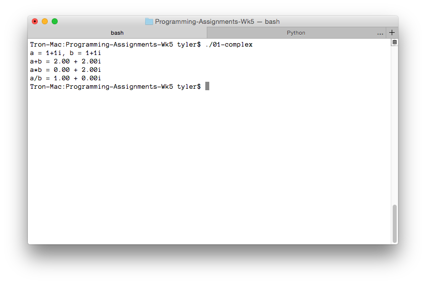

---

layout: default
title: 01-complex

---

{% highlight c++ %}
// Tyler Mumford, 2014
// Complex numbers

#include <stdio.h>
#include <math.h>

typedef struct {
	double real;
	double imaginary;
} Complex;

double modulus (Complex c);
Complex add (Complex c1, Complex c2);
Complex mult (Complex c1, Complex c2);
Complex divide (Complex c1, Complex c2);

int main () {
	Complex a = {1.0, 1.0}, b = {1.0, 1.0};
	printf("a = 1+1i, b = 1+1i\n");
	printf("a+b = %.2lf + %.2lfi\n", add(a, b).real, add(a, b).imaginary);
	printf("a*b = %.2lf + %.2lfi\n", mult(a, b).real, mult(a, b).imaginary);
	printf("a/b = %.2lf + %.2lfi\n", divide(a, b).real, divide(a, b).imaginary);
	return 0;
}

double modulus (Complex c) {
	double x = c.real;
	double y = c.imaginary;
	return sqrt(x*x + y*y);
}

Complex add (Complex c1, Complex c2) {
	Complex result = { c1.real+c2.real, c1.imaginary+c2.imaginary };
	return result;
}

Complex mult (Complex c1, Complex c2) {
	Complex result = {
		c1.real*c2.real - c1.imaginary*c2.imaginary,
		c1.imaginary*c2.real + c1.real*c2.imaginary
	};
	return result;
}

Complex divide (Complex c1, Complex c2) {
	Complex result = {
		(c1.real*c2.real + c1.imaginary*c2.imaginary) / (c2.real*c2.real + c2.imaginary*c2.imaginary),
		(c1.imaginary*c2.real - c1.real*c2.imaginary) / (c2.real*c2.real + c2.imaginary*c2.imaginary)
	};
	return result;
}
{% endhighlight %}


